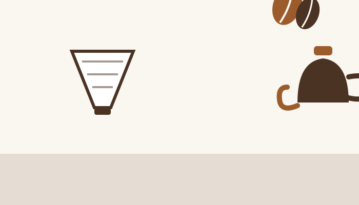

品牌故事
BrewGo 沖沖咖啡的起點很單純：想讓「自己在家也能沖出一杯好咖啡」這件事，變得沒那麼有門檻。我們相信好咖啡不需要很多術語，只需要有人願意把選豆、烘焙、沖煮的知識，好好講清楚。
從第一間門市開始，我們就堅持每一批豆子都經過職人杯測把關，也把每一款豆子適合的沖煮方式寫進商品頁——這也是為什麼你會在型錄裡看到「沖煮建議」這樣的欄位。

-
2024
台北大安一號店開幕
在台北市大安區沖沖街開出第一間門市，主打單品手沖與少量烘焙，開幕當週就把當月豆單全數售完。
-
2025
建立商品型錄與沖煮知識庫
把常客詢問度最高的沖煮參數整理成標準規格表，也開始固定引進掛耳包與手沖器具，讓客人不只能買豆子，也能一次備齊沖煮工具。
-
2026
台中西區二店開幕，官方網站上線
台中西區沖沖路二店正式開幕，同時推出你現在看到的這個多頁式官方網站，把型錄、品牌故事、門市資訊整理成完整的網站架構。
我們在意的事
選豆把關
每一款上架的豆子都經過店內杯測，確認風味描述與實際沖煮結果一致，不是只看產區名字選豆。
知識透明
商品頁的沖煮建議、保存方式都是我們自己每天沖煮會用到的參數，不是行銷用語，看得到也用得到。
門市優先
我們相信手沖咖啡最好的體驗還是在門市現場，網站的角色是讓你先認識商品，再決定要不要來門市喝喝看。